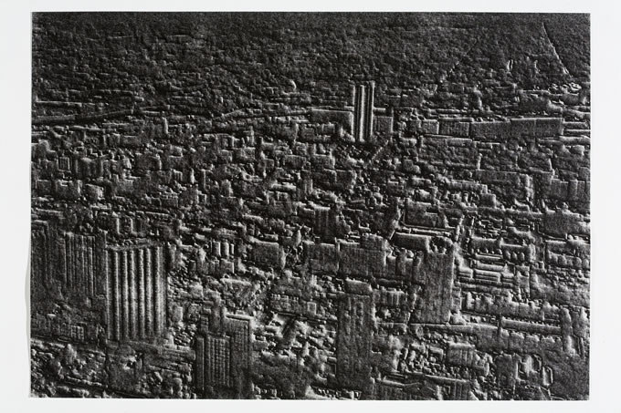

home
Re-Natured 2019 -2020
Model Series 2011 - 2014
Evidence of Doubt 2011 - 2013
Regeneration 2006 - 2010
Under False Colours 2004
Works 1996 - 2000
contact
biography
Prints from Regeneration Regeneration I (Chicago)  Regeneration II (Chicago) The four etchings from Regeneration were shown as part of the group exhibition 'Afterlife' at the Fitzwilliam Museum, Cambridge, December 2010 - May 2011. Details can be found at: www.fitzmuseum.cam.ac.uk
Continuous Cities 5 (Calvino),
2006 Braille Suite is one work within the Regeneration project. It is a set of five individual texts extracted from Italo Calvino’s Invisible Cities which have then been transcribed into Braille and printed as blind embossed etchings. Presented in a language of touch rather than sight, and yet unreadable behind glass, they make the cities they describe inaccessible to us: at once found and lost.
|